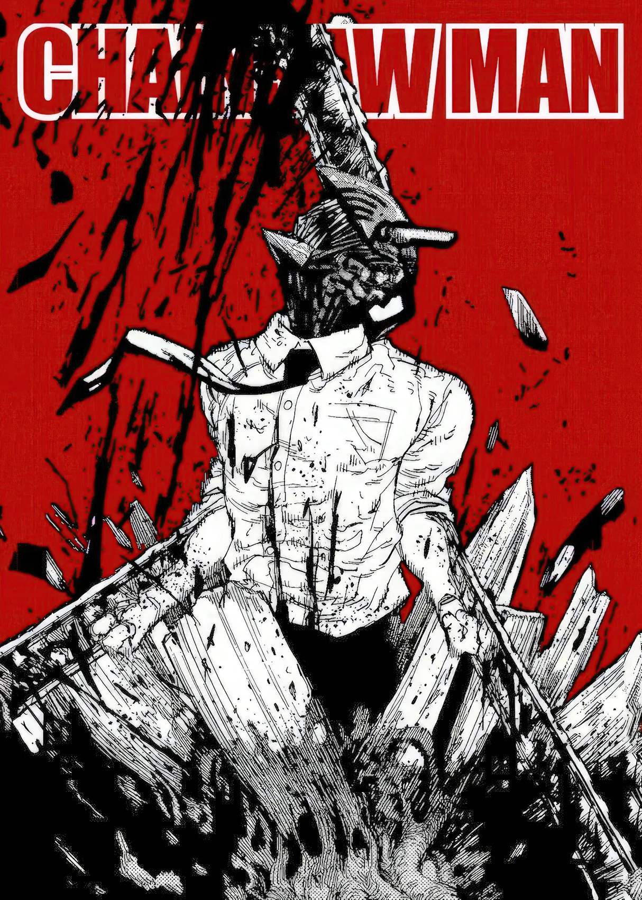
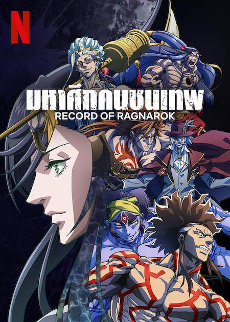
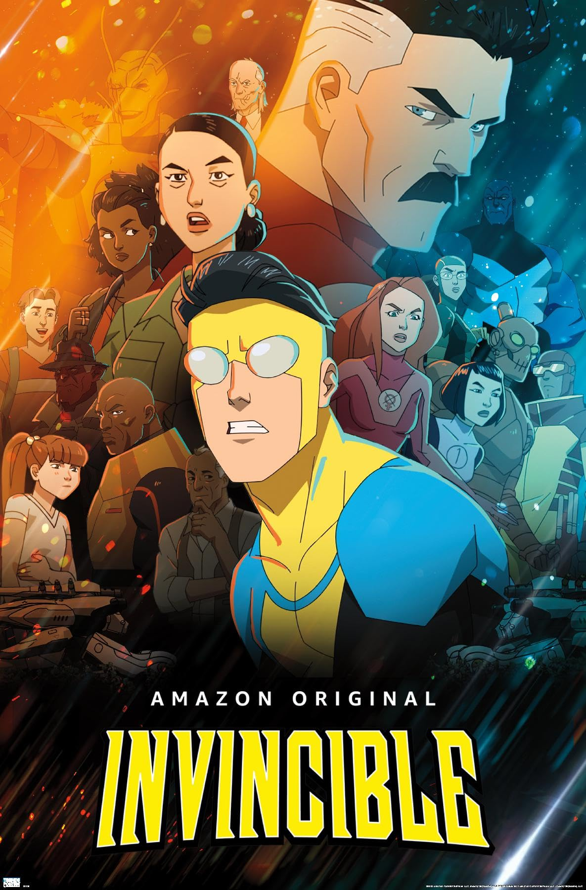
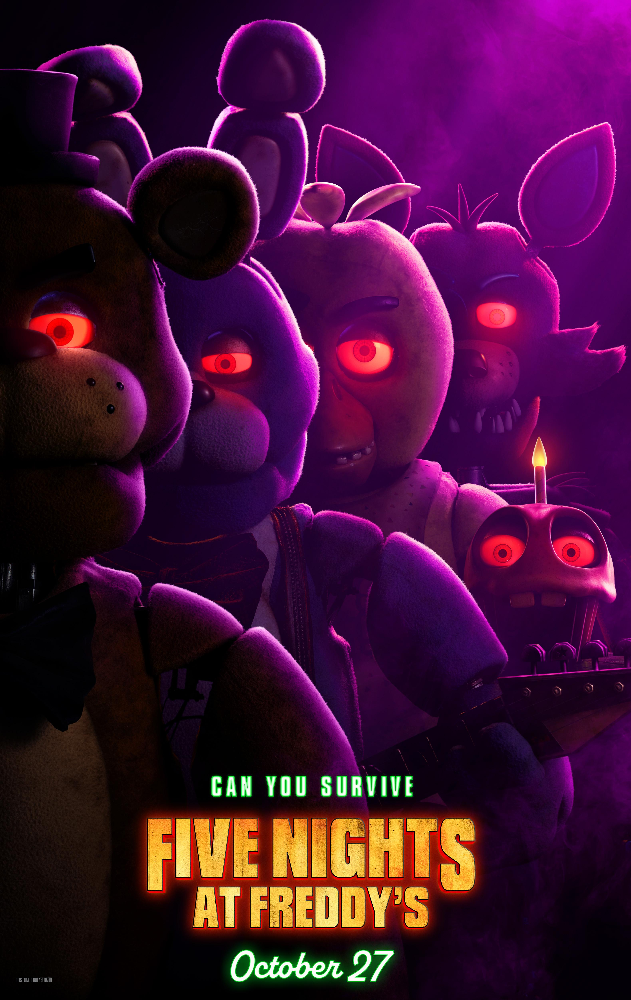

Chainsaw Man - The Movie: Reze Arc

Chainsaw Man

Death Note

Record of Ragnarok: Season 1

Record of Ragnarok: Season 2

Record of Ragnarok: Season 3

Neon Genesis Evangelion

Neon Genesis Evangelion: The End of Evangelion

Evangelion - 1.0 You Are (Not) Alone

Evangelion - 2.0 You Can (Not) Advance

Evangelion 3.0 You Can (Not) Redo

Evangelion: 3.0+1.0 Thrice Upon a Time

Code Geass Season 1

Code Geass Season 2

Real Steel

Alita: Battle Angel

Blade Runner

Blade Runner 2049

Star Wars I: The Phantom Menace

Star Wars II: Attack of the Clones

Star Wars III: Revenge of the Sith

Star Wars IV: A New Hope

Star Wars V: The Empire Strikes Back

Star Wars VI: Return of the Jedi

Solo: A Star Wars Story

Rogue One: A Star Wars Story

Superman

Invincible Season 1

Invincible Season 2

Invincible Season 3

Resident Evil

Resident Evil: Apocalypse

Resident Evil: Extinction

Resident Evil: Afterlife

Resident Evil: Retribution

Resident Evil: The Final Chapter

Dune

Dune: Part Two

The Hunger Games

The Hunger Games: Catching Fire

The Hunger Games: Mockingjay - Part 1

The Hunger Games: Mockingjay - Part 2

The Hunger Games: The Ballad of Songbirds & Snakes

Interstellar

Five Nights at Freddy's

Five Nights at Freddy's 2
Prison School

Devil May Cry

Cyberpunk: Edgerunners

Hell's Paradise Season 2